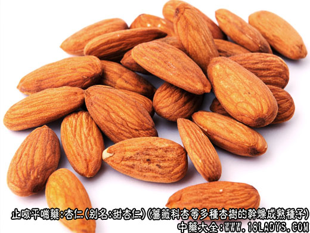

杏仁为常用中药，《名医别录》列为下品。商品有甜，苦。
别名：苦杏仁，甜杏仁。
来源：为蔷薇科落叶乔木或小乔木，杏或山杏等多种杏树的干燥成熟种子。野生栽培。野生品多为苦杏仁。栽培甜杏仁较多。
产地：生产于华北，东北地区，西北地区及河南、山东、湖北等省均有产。
性状鉴别：
苦杏仁：呈扁心脏形或桃形，顶端略尖，基部偏钝圆，左右不对称。长1～1.6厘米，宽0.7～1.2厘米，厚5～7毫米。种皮薄，黄棕色或棕色，较粗糙。表面有纵皱及较明的沟纹和脉纹。断面乳白色，富油性。子叶两片，间隙明显。气微味苦。以颗粒均匀，饱满，整齐不碎者为佳。
甜杏仁：呈扁心脏形，顶端尖，基部圆，左右略对称。长1～2厘米，宽1.2～1.6厘米，厚4～6毫米。种皮淡黄棕色，较细腻，表面纵皱沟纹较浅，脉纹明显。断面与苦杏仁相同。气微味甜。
以颗粒大而饱满，均匀，无破碎泛油者为佳。
主要成分：含苦杏仁甙、苦杏仁酶、苦杏仁油。苦杏仁甙水解后产生氢氰酸。
药理作用：润肺止咳。所谓润肺，大概是指能润解肺燥引起的干咳和燥痰。在这方面，杏仁主要是通过氢氰酸的镇咳和祛痰作用而取效。
杏仁还能润肠通便，由所含的脂肪油在肠内起润滑性通便作用。
炮制：
（1）苦杏仁：去皮炒用。配方时捣碎。
（2）甜杏仁：去皮生用。
性味：苦、温。有小毒（苦杏仁）。
归经：归肺、大肠经。
功能：解肌除痰，下气润燥。
主治：外感咳嗽、气逆喘满、痰多及肠燥便秘。
临床应用：为止咳平喘的常用药。在润肺方剂内，杏仁常不可少。
（1）用于止喘，治外感引起的燥咳尤为适宜。偏于风寒者配苏叶等，方如杏苏散；偏于风热者配桑叶等，方如桑杏汤。
（2）用于定喘，主要是通过祛痰降气，减轻肺气壅塞，使呼吸较通畅而助于止喘，但只作为辅助药用，协助麻黄，用于实证喘嗽、肺热明显者加配石膏，方如麻杏石甘汤（见麻黄项下）。一般的热喘则加配黄芩、白果、桑白皮等，方如定喘汤（见银杏项下）
（3）用于通便，治气虚和肠燥所致的便秘（习惯性便秘），常配火麻仁、柏子仁等，方如三仁丸。
使用注意：
（1）苦杏仁多服易致中毒（由氢氰酸吸收过多引起），轻则头晕，呕吐，重则昏迷、惊厥、呼吸障碍、瞳孔散大，宜用亚硝酸戊酯与硫代硫酸钠综合治疗而解毒。
（2）苦杏仁煎煮后有效成分（苦杏仁甙）含量甚微，最近有人建议改为冲服，剂量比煎剂适当减少。
（3）苦杏仁最好连衣服，据观察，不去皮的苦杏仁比去皮的效果好。
用量：3～12g，不宜多服，用时去仁尖更好。
处方举例：
杏苏散（《温病条辫》）：桑叶6g，杏仁6g（去尖打碎），象贝9g，淡豆豉9g，山栀皮6g，沙参9g，梨皮6g，水煎服。
附：甜杏仁又名南杏。为蔷薇科植物杏的干燥的成熟种子。味甘，性平，无毒。含苦杏仁甙较北杏少，故镇咳平喘作用较差。临床上一般用北杏。至于南杏较少入药，民间有用作副食品。捣烂成糊或煮汤服食，只起滑肠通便作用。
甜杏仁，味甘性平，治虚劳咳嗽、胸闷不畅。